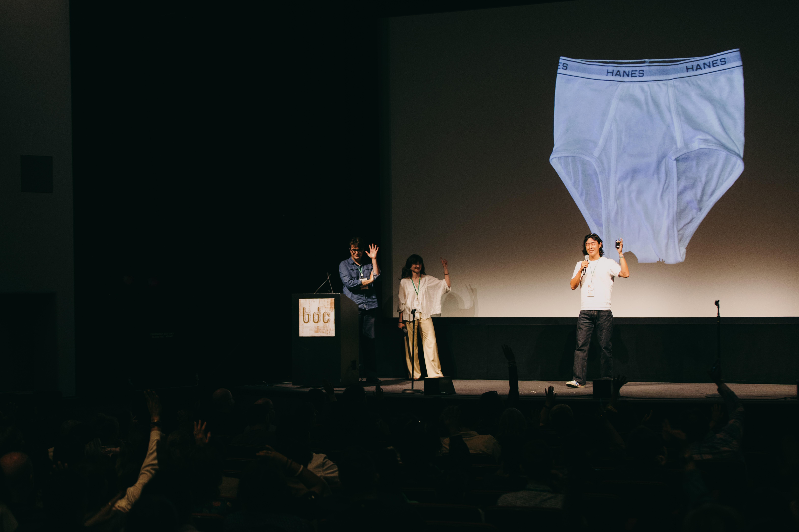

Kerra
Turning wool waste into next-generation bio-based materials.
Replacing fossil fuel-based materials is one of the defining challenges of the 21st century.
Wool is composed of 95% keratin — the same protein that builds our hair, nails, and skin. Yet 85% of global wool is burned, buried, or offers no income to farmers. Kerra transforms this undervalued feedstock into keratin formulations for fibers and yarns, sprayable films, and cosmetic ingredients, driving a new age of bio-based materials innovation.
or offers no income
A 3-step process to transform wool
into next-generation materials.
Extract
High molecular weight keratin polymers with preserved protein structure, using a recyclable solvent system that keeps the process clean and scalable.
Re-tune
Reconfigure keratin to produce 100+ new polymers tailored for cosmetics, technical fibers, and barrier films — all from a single feedstock.
Platform Supply
One natural feedstock becomes a scalable materials platform serving multiple industries — replacing petrochemicals with something the planet already makes.


